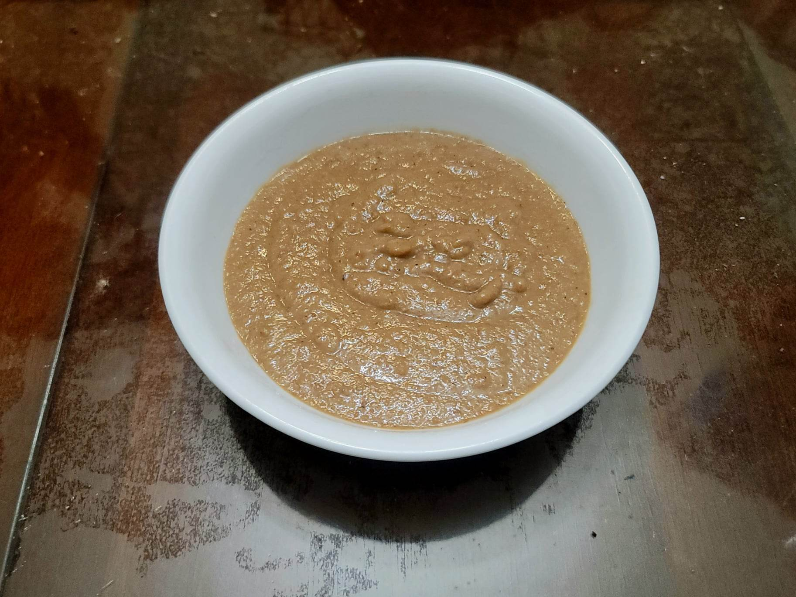

Lechon Sauce

Ingredients:
- 1 cup Liver, chicken or pork
- 2 tbsp Oil
- 1 Onion, sliced
- 3 cloves Garlic, rough minced
- 3/4 cup White vinegar
- 3 cups Water
- 3/4 cup Brown sugar
- 1 tbsp Salt
- 1/4 tsp Black pepper
- 2/3 cup Breadcrumbs
Instructions:
- Bring a pot of lightly salted water to a boil. Add the liver and let cook for 3-5 minutes or until cooked through. Strain the liver from the water and reserve.
- Heat the oil in a saucepan over medium heat. Add the onion and garlic and sauté until softened, about 5-7 minutes.
- Add the vinegar and water. Bring to a boil and let cook uncovered for about 1-2 minutes.
- Add the sugar, salt, and pepper. Continue to cook until the sugar is dissolved.
- Add the cooked liver and blend with an immersion blender until completely smooth. Then stir in the breadcrumbs. Cook, stirring constantly, until thickened to preference.
- Remove from the heat and allow to cool. Serve with lechon.